超ＭＶメーカー！
「歌ってみた」等の動画ファイル(青/緑バック)または音楽ファイルからMV(ミュージックビデオ)を自動生成します。
全てブラウザ内で処理します。サーバーへの送信は一切ありません。
使い方はユーザーガイドを、 不具合の報告・要望はIssueをご利用ください。
全てブラウザ内で処理します。サーバーへの送信は一切ありません。
使い方はユーザーガイドを、 不具合の報告・要望はIssueをご利用ください。
WASM 読み込み中…